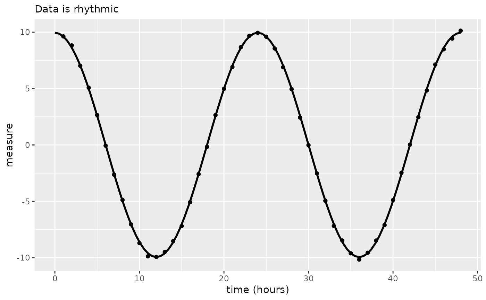

circa_single
circa_single.Rdcirca_single performs an analysis on a single rhythmic dataset. It estimates the mesor, amplitude and phase of the data provided.
Usage
circa_single(
x,
col_time,
col_outcome,
period = 24,
alpha_threshold = 0.05,
timeout_n = 10000,
return_figure = TRUE,
control = list(),
weights = NULL,
suppress_all = FALSE
)Arguments
- x
data.frame. This is the data.frame which contains the rhythmic data in a tidy format.
- col_time
The name of the column within the data.frame, x, which contains time in hours at which the data were collected.
- col_outcome
The name of the column within the data.frame, x, which contains outcome measure of interest.
- period
The period of the rhythm. For circadian rhythms, leave this as the default value, 24.
- alpha_threshold
The level of alpha for which the presence of rhythmicity is considered. Default is 0.05.
- timeout_n
The upper limit for the model fitting attempts. Default is 10,000.
- return_figure
Whether or not to return a ggplot graph of the rhythm and cosine model.
- control
list. Used to control the parameterization of the model.- weights
An optional numeric vector of (fixed) weights. When present, the objective function is weighted least squares.
- suppress_all
Logical. Set to
TRUEto avoid seeing errors or messages during model fitting procedure. Default isFALSE.
Examples
df <- make_data()
df <- df[df$group == "g1", ]
out <- circa_single(x = df, col_time = "time", col_outcome = "measure")
out
#> $fit
#> Nonlinear regression model
#> model: measure ~ k + (alpha) * cos((1/period) * time_r - (phi))
#> data: x
#> k alpha phi
#> -0.0135278 9.9583663 0.0005928
#> residual sum-of-squares: 0.5678
#>
#> Number of iterations to convergence: 3
#> Achieved convergence tolerance: 3.783e-06
#>
#> $summary
#> parameter value
#> 1 rhythmic_p 3.684243e-83
#> 2 mesor -1.352778e-02
#> 3 amplitude 9.958366e+00
#> 4 phase_radians 5.928095e-04
#> 5 peak_time_hours 2.264365e-03
#> 6 period 2.400000e+01
#>
#> $plot
#>
# with sample weights (arbitrary weights for demonstration)
sw <- runif(n = nrow(df))
out2 <- circa_single(
x = df,
col_time = "time",
col_outcome = "measure",
weights = sw,
suppress_all = TRUE
)
out2
#> $fit
#> Nonlinear regression model
#> model: measure ~ k + (alpha) * cos((1/period) * time_r - (phi))
#> data: x
#> k alpha phi
#> 0.0043342 9.9486495 0.0007728
#> weighted residual sum-of-squares: 0.2594
#>
#> Number of iterations to convergence: 4
#> Achieved convergence tolerance: 2.726e-06
#>
#> $summary
#> parameter value
#> 1 rhythmic_p 6.996457e-84
#> 2 mesor 4.334236e-03
#> 3 amplitude 9.948650e+00
#> 4 phase_radians 7.727628e-04
#> 5 peak_time_hours 2.951736e-03
#> 6 period 2.400000e+01
#>
#> $plot

#>